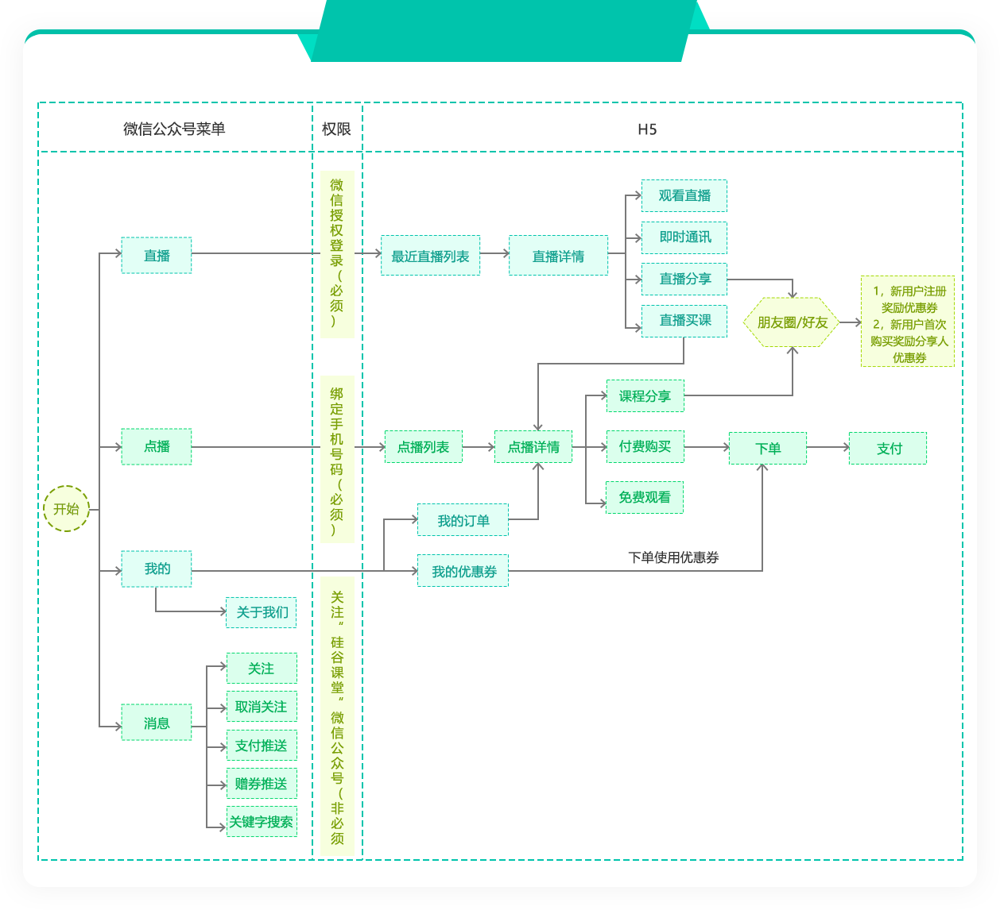
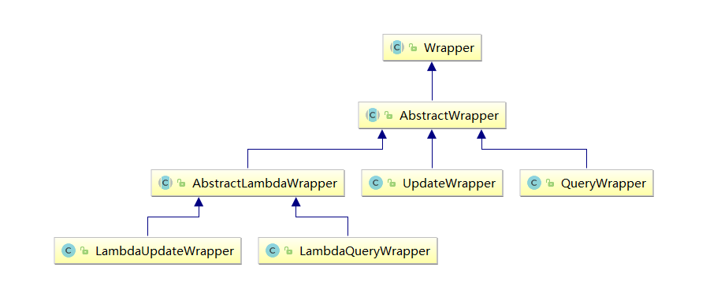
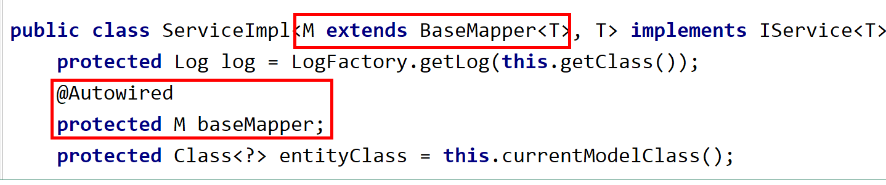

# 硅谷课程第一天 - 项目概述和 MyBatisPlus 使用
[TOC]
# 一、硅谷课堂概述
# 1、项目介绍
硅谷课堂是尚硅谷与腾讯云官方合作的项目，是一款基于微信公众号 B2C 模式的在线学习平台，该平台包含三大模块：直播、教学与微信消息服务；平台会定期推出直播课程，方便学员与名师之间的交流互动，学员也可以购买教学视频在线学习，分享直播与教学视频获取平台收益，平台支持直播、腾讯云视频点播、微信支付、微信授权登录、微信菜单、微信消息与腾讯云文件存储等一系列功能，为学员构建了一个全方位的在线学习平台。
硅谷课堂项目具有很强的实用性，业务场景贴近实际，技术应用紧跟市场潮流，完全按照市场需求开发。既是对主流 Java 技术的系统性梳理和整合，同时也是各种主流技术实际应用的练兵场，能够帮助 Java 程序员积累项目经验。本套教程会在腾讯云开发者社区同步上线，你也可以在 “腾讯云开发者社区” 学习和下载教程。
# 2、硅谷课程流程图

# 3、硅谷课堂功能架构

# 4、硅谷课堂技术架构
<img src="jishujiagou.png" alt="img" style="zoom:100%;" />
# 5、硅谷课堂核心技术
# 5.1、后端技术
SpringBoot：简化新 Spring 应用的初始搭建以及开发过程
SpringCloud：基于 Spring Boot 实现的云原生应用开发工具，SpringCloud 使用的技术：（Spring Cloud Gateway、Spring Cloud Alibaba Nacos、Spring Cloud Alibaba Sentinel、Spring Cloud Alibaba Seata、Spring Cloud Task 和 Spring Cloud Feign 等）
MyBatis-Plus：持久层框架
Redis：内存缓存
RabbitMQ：消息中间件
腾讯云：文件存储
腾讯云：视频点播
欢拓云直播：直播平台
微信支付
Nginx：负载均衡
Lombok
Mysql：关系型数据库
# 5.2、前端技术
Vue.js：web 界面的渐进式框架
Node.js： JavaScript 运行环境
Axios：Axios 是一个基于 promise 的 HTTP 库
NPM：包管理器
Babel：转码器
Webpack：打包工具
# 5.3、其他技术
Docker ：容器技术
Git：代码管理工具
DockerFile：管理 Docker 镜像命令文本
# 二、技术点 - MyBatisPlus
# 1、MyBatisPlus 简介
# 1.1、概述
官网：https://baomidou.com/
MyBatis-Plus（简称 MP）是一个 MyBatis 的增强工具，在 MyBatis 的基础上只做增强不做改变，为简化开发、提高效率而生。
# 1.2、特性
- 无侵入：只做增强不做改变，引入它不会对现有工程产生影响，如丝般顺滑
- 损耗小：启动即会自动注入基本 CURD， 性能基本无损耗，直接面向对象操作
- 强大的 CRUD 操作：内置通用 Mapper、通用 Service，仅仅通过少量配置即可实现单表大部分 CRUD 操作，更有强大的条件构造器，满足各类使用需求
- 支持 Lambda 形式调用：通过 Lambda 表达式，方便的编写各类查询条件，无需再担心字段写错
- 支持多种数据库：支持 MySQL、MariaDB、Oracle、DB2、H2、HSQL、SQLite、Postgre、SQLServer2005、SQLServer 等多种数据库
- 支持主键自动生成：支持多达 4 种主键策略（内含分布式唯一 ID 生成器 - Sequence），可自由配置，完美解决主键问题
- 支持 XML 热加载：Mapper 对应的 XML 支持热加载，对于简单的 CRUD 操作，甚至可以无 XML 启动
- 支持 ActiveRecord 模式：支持 ActiveRecord 形式调用，实体类只需继承 Model 类即可进行强大的 CRUD 操作
- 支持自定义全局通用操作：支持全局通用方法注入（ Write once, use anywhere ）
- 支持关键词自动转义：支持数据库关键词（order、key......）自动转义，还可自定义关键词
- 内置代码生成器：采用代码或者 Maven 插件可快速生成 Mapper 、 Model 、 Service 、 Controller 层代码，支持模板引擎，更有超多自定义配置等您来使用
- 内置分页插件：基于 MyBatis 物理分页，开发者无需关心具体操作，配置好插件之后，写分页等同于普通 List 查询
- 内置性能分析插件：可输出 Sql 语句以及其执行时间，建议开发测试时启用该功能，能快速揪出慢查询
- 内置全局拦截插件：提供全表 delete 、 update 操作智能分析阻断，也可自定义拦截规则，预防误操作
- 内置 Sql 注入剥离器：支持 Sql 注入剥离，有效预防 Sql 注入攻击
# 2、MyBatisPlus 入门
# 2.1、创建测试数据库和表
mybatis_plus
其表结构如下：
| id | name | age | |
|---|---|---|---|
| 1 | Jone | 18 | test1@baomidou.com |
| 2 | Jack | 20 | test2@baomidou.com |
| 3 | Tom | 28 | test3@baomidou.com |
| 4 | Sandy | 21 | test4@baomidou.com |
| 5 | Billie | 24 | test5@baomidou.com |
其对应的建表语句如下：
CREATE TABLE user | |
( | |
id BIGINT(20) NOT NULL COMMENT '主键ID', | |
name VARCHAR(30) NULL DEFAULT NULL COMMENT '姓名', | |
age INT(11) NULL DEFAULT NULL COMMENT '年龄', | |
email VARCHAR(50) NULL DEFAULT NULL COMMENT '邮箱', | |
PRIMARY KEY (id) | |
); |
其对应的数据库 Data 脚本如下：
INSERT INTO user (id, name, age, email) VALUES | |
(1, 'Jone', 18, 'test1@baomidou.com'), | |
(2, 'Jack', 20, 'test2@baomidou.com'), | |
(3, 'Tom', 28, 'test3@baomidou.com'), | |
(4, 'Sandy', 21, 'test4@baomidou.com'), | |
(5, 'Billie', 24, 'test5@baomidou.com'); |
# 2.2、创建项目和添加依赖
（1）使用 Spring Initializr 初始化 Spring Boot 工程
Group：com.atguigu
Artifact：mybatis-plus
版本：2.2.1.RELEASE
（2）项目引入依赖
<dependencies> | |
<dependency> | |
<groupId>org.springframework.boot</groupId> | |
<artifactId>spring-boot-starter</artifactId> | |
</dependency> | |
<dependency> | |
<groupId>org.springframework.boot</groupId> | |
<artifactId>spring-boot-starter-test</artifactId> | |
<scope>test</scope> | |
</dependency> | |
<!--mybatis-plus--> | |
<dependency> | |
<groupId>com.baomidou</groupId> | |
<artifactId>mybatis-plus-boot-starter</artifactId> | |
<version>3.3.1</version> | |
</dependency> | |
<!--mysql--> | |
<dependency> | |
<groupId>mysql</groupId> | |
<artifactId>mysql-connector-java</artifactId> | |
</dependency> | |
<!--lombok 用来简化实体类 --> | |
<dependency> | |
<groupId>org.projectlombok</groupId> | |
<artifactId>lombok</artifactId> | |
</dependency> | |
</dependencies> |
（3）idea 中安装 lombok 插件
<img src="303533a2-0148-4329-a770-c4af5114b22c.png" />
# 2.3、创建配置文件
mysql5
#mysql 数据库连接 | |
spring.datasource.driver-class-name=com.mysql.jdbc.Driver | |
spring.datasource.url=jdbc:mysql://localhost:3306/mybatis_plus | |
spring.datasource.username=root | |
spring.datasource.password=123456 |
mysql8 以上（spring boot 2.1）注意：driver 和 url 的变化
spring.datasource.driver-class-name=com.mysql.cj.jdbc.Driver | |
spring.datasource.url=jdbc:mysql://localhost:3306/mybatis_plus?serverTimezone=GMT%2B8 | |
spring.datasource.username=root | |
spring.datasource.password=root |
注意：
1、这里的 url 使用了？serverTimezone=GMT%2B8 后缀，因为 Spring Boot 2.1 集成了 8.0 版本的 jdbc 驱动，这个版本的 jdbc 驱动需要添加这个后缀，否则运行测试用例报告如下错误：
java.sql.SQLException: The server time zone value 'Öйú±ê׼ʱ¼ä' is unrecognized or represents more
2、这里的 driver-class-name 使用了 com.mysql.cj.jdbc.Driver ，在 jdbc 8 中 建议使用这个驱动，之前的 com.mysql.jdbc.Driver 已经被废弃，否则运行测试用例的时候会有 WARN 信息
# 2.4、编写代码
（1）创建启动类
在 Spring Boot 启动类中添加 @MapperScan 注解，扫描 Mapper 文件夹
@SpringBootApplication | |
@MapperScan("com.atguigu.mybatisplus.mapper") | |
public class MybatisPlusApplication { | |
...... | |
} |
（2）创建实体类
@Data | |
public class User { | |
private Long id; | |
private String name; | |
private Integer age; | |
private String email; | |
} |
（3）创建 Mapper
public interface UserMapper extends BaseMapper<User> { | |
} |
（4）功能测试 - 查询所有记录
public class MybatisPlusApplicationTests { | |
@Autowired | |
private UserMapper userMapper; | |
@Test | |
public void testSelectList() { | |
System.out.println(("----- selectAll method test ------")); | |
//UserMapper 中的 selectList () 方法的参数为 MP 内置的条件封装器 Wrapper | |
// 所以不填写就是无任何条件 | |
List<User> users = userMapper.selectList(null); | |
users.forEach(System.out::println); | |
} | |
} |
注意：
IDEA 在 userMapper 处报错，因为找不到注入的对象，因为类是动态创建的，但是程序可以正确的执行。
为了避免报错，可以在 dao 层 的接口上添加 @Repository 注解
# 3、MyBatisPlus 实现 CRUD 操作
# 3.1、插入操作
public class CRUDTests { | |
@Autowired | |
private UserMapper userMapper; | |
@Test | |
public void testInsert(){ | |
User user = new User(); | |
user.setName("mary"); | |
user.setAge(18); | |
user.setEmail("atguigu@qq.com"); | |
int result = userMapper.insert(user); | |
System.out.println(result); // 影响的行数 | |
System.out.println(user); //id 自动回填 | |
} | |
} |
** 注意：** 数据库插入 id 值默认为：全局唯一 id
查看 sql 输出日志
加在当前项目的配置文件中
#mybatis 日志 | |
mybatis-plus.configuration.log-impl=org.apache.ibatis.logging.stdout.StdOutImpl |
在控制台可以看到输出日志
# 3.2、主键策略
（1）ID_WORKER
MyBatis-Plus 默认的主键策略是：ID_WORKER 全局唯一 ID
（2）自增策略
要想主键自增需要配置如下主键策略
- 需要在创建数据表的时候设置主键自增
- 表主键字段类型是 int 类型，increment_int，BigInt
- 实体字段中配置 @TableId (type = IdType.AUTO)
@TableId(type = IdType.AUTO) | |
private Long id; |
其它主键策略：分析 IdType 源码可知
public enum IdType { | |
/** | |
* 数据库 ID 自增 | |
*/ | |
AUTO(0), | |
/** | |
* 该类型为未设置主键类型 | |
*/ | |
NONE(1), | |
/** | |
* 用户输入 ID | |
* 该类型可以通过自己注册自动填充插件进行填充 | |
*/ | |
INPUT(2), | |
/** | |
* 全局唯一 ID | |
* 默认策略，雪花算法，生成 19 位数字值 | |
*/ | |
ASSIGN_ID(3), | |
/** | |
* 全局唯一 ID (UUID) | |
* 生成数字和字母 | |
* 缺点：有字母不能排序 | |
*/ | |
ASSIGN_UUID(4), | |
/** @deprecated */ | |
@Deprecated | |
ID_WORKER(3), | |
/** @deprecated */ | |
@Deprecated | |
ID_WORKER_STR(3), | |
/** @deprecated */ | |
@Deprecated | |
UUID(4); | |
private final int key; | |
private IdType(int key) { | |
this.key = key; | |
} | |
public int getKey() { | |
return this.key; | |
} | |
} |
# 3.3、根据 Id 更新操作
** 注意：**update 时生成的 sql 自动是动态 sql：UPDATE user SET age=? WHERE id=?
@Test | |
public void testUpdateById(){ | |
//1 根据 id 查询记录 | |
User user = userMapper.selectById(1L); | |
//2 设置修改的值 | |
user.setAge(50); | |
//3 调用方法修改 | |
int result = userMapper.updateById(user); | |
System.out.println(result); | |
} |
# 3.4、分页查询
MyBatis Plus 自带分页插件，只要简单的配置即可实现分页功能
（1）创建配置类
在项目包下创建 config 包，创建 MpConfig 类
@Configuration | |
public class MpConfig { | |
/** | |
* 分页插件 | |
*/ | |
@Bean | |
public PaginationInterceptor paginationInterceptor() { | |
return new PaginationInterceptor(); | |
} | |
} |
（2）测试 selectPage 分页
** 测试：** 最终通过 page 对象获取相关数据
@Test | |
public void testSelectPage() { | |
// 创建 page 对象，传递两个参数：当前页 每页显示记录数 | |
Page<User> page = new Page<>(1,5); | |
// 调用 mp 方法实现分页 | |
userMapper.selectPage(page, null); | |
page.getRecords().forEach(System.out::println); | |
System.out.println(page.getCurrent()); | |
System.out.println(page.getPages()); | |
System.out.println(page.getSize()); | |
System.out.println(page.getTotal()); | |
System.out.println(page.hasNext()); | |
System.out.println(page.hasPrevious()); | |
} |
控制台 sql 语句打印： SELECT id,name,age,email,create_time,update_time FROM user LIMIT 0,5
# 3.5、根据 id 删除记录
@Test | |
public void testDeleteById(){ | |
int result = userMapper.deleteById(8L); | |
System.out.println(result); | |
} |
# 3.6、批量删除
@Test | |
public void testDeleteBatchIds() { | |
int result = userMapper.deleteBatchIds(Arrays.asList(8, 9, 10)); | |
System.out.println(result); | |
} |
# 3.7、逻辑删除
- 物理删除：真实删除，将对应数据从数据库中删除，之后查询不到此条被删除数据
- 逻辑删除：假删除，将对应数据中代表是否被删除字段状态修改为 “被删除状态”，之后在数据库中仍旧能看到此条数据记录，本质：修改操作
（1）数据库中添加 deleted 字段
ALTER TABLE `user` ADD COLUMN `deleted` boolean
（2）实体类添加 deleted 字段
并加上 @TableLogic 注解
@TableLogic | |
private Integer deleted; |
（3）application.properties 加入配置
此为默认值，如果你的默认值和 mp 默认的一样，该配置可无
mybatis-plus.global-config.db-config.logic-delete-value=1 | |
mybatis-plus.global-config.db-config.logic-not-delete-value=0 |
（5）测试逻辑删除
- 测试后发现，数据并没有被删除，deleted 字段的值由 0 变成了 1
- 测试后分析打印的 sql 语句，是一条 update
- ** 注意：** 被删除数据的 deleted 字段的值必须是 0，才能被选取出来执行逻辑删除的操作
/** | |
* 测试 逻辑删除 | |
*/ | |
@Test | |
public void testLogicDelete() { | |
int result = userMapper.deleteById(1L); | |
System.out.println(result); | |
} |
（7）测试逻辑删除后的查询
MyBatis Plus 中查询操作也会自动添加逻辑删除字段的判断
/** | |
* 测试 逻辑删除后的查询： | |
* 不包括被逻辑删除的记录 | |
*/ | |
@Test | |
public void testLogicDeleteSelect() { | |
User user = new User(); | |
List<User> users = userMapper.selectList(null); | |
users.forEach(System.out::println); | |
} |
测试后分析打印的 sql 语句，包含 WHERE deleted=0
SELECT id,name,age,email,create_time,update_time,deleted FROM user WHERE deleted=0
# 4、MyBatisPlus 条件构造器

Wrapper ： 条件构造抽象类，最顶端父类
AbstractWrapper ： 用于查询条件封装，生成 sql 的 where 条件
QueryWrapper ： Entity 对象封装操作类，不是用 lambda 语法
UpdateWrapper ： Update 条件封装，用于 Entity 对象更新操作
AbstractLambdaWrapper ： Lambda 语法使用 Wrapper 统一处理解析 lambda 获取 column。
LambdaQueryWrapper ：看名称也能明白就是用于 Lambda 语法使用的查询 Wrapper
LambdaUpdateWrapper ： Lambda 更新封装 Wrapper
注意：以下条件构造器的方法入参中的 column 均表示数据库字段
# 4.1、QueryWrapper 使用
（1）ge、gt、le、lt 大于等于、大于、小于等于、小于
@Test | |
public void testSelect() { | |
QueryWrapper<User> queryWrapper = new QueryWrapper<>(); | |
queryWrapper.ge("age", 28); | |
List<User> users = userMapper.selectList(queryWrapper); | |
System.out.println(users); | |
} |
SELECT id,name,age,email,deleted FROM user WHERE deleted=0 AND (age >=?)
（2）eq、ne 等于、不等于
** 注意：**seletOne 返回的是一条实体记录，当出现多条时会报错
@Test | |
public void testSelectOne() { | |
QueryWrapper<User> queryWrapper = new QueryWrapper<>(); | |
queryWrapper.eq("name", "Tom"); | |
User user = userMapper.selectOne(queryWrapper); | |
System.out.println(user); | |
} |
SELECT id,name,age,email,create_time,update_time,deleted,version FROM user WHERE deleted=0 AND name = ?
（3）like、likeLeft、likeRight 模糊查询，百分号在左（以开头），百分号在右（以结尾）
selectMaps 返回 Map 集合列表
@Test | |
public void testSelectMaps() { | |
QueryWrapper<User> queryWrapper = new QueryWrapper<>(); | |
queryWrapper | |
.like("name", "e") | |
.likeRight("email", "t"); | |
List<Map<String, Object>> maps = userMapper.selectMaps(queryWrapper);// 返回值是 Map 列表 | |
maps.forEach(System.out::println); | |
} |
SELECT id,name,age,email,create_time,update_time,deleted,version FROM user WHERE deleted=0 AND name LIKE ? AND email LIKE ?
（4）orderByDesc、orderByAsc 排序、降序、升序
@Test | |
public void testSelectListOrderBy() { | |
QueryWrapper<User> queryWrapper = new QueryWrapper<>(); | |
queryWrapper.orderByDesc("id"); | |
List<User> users = userMapper.selectList(queryWrapper); | |
users.forEach(System.out::println); | |
} |
SELECT id,name,age,email,create_time,update_time,deleted,version FROM user WHERE deleted=0 ORDER BY id DESC
# 4.2、LambdaQueryWrapper 使用
@Test | |
public void testLambdaQuery() { | |
LambdaQueryWrapper<User> queryWrapper = new LambdaQueryWrapper<>(); | |
queryWrapper.eq(User::getAge,30); | |
queryWrapper.like(User::getName,"张"); | |
List<User> list = userMapper.selectList(queryWrapper); | |
System.out.println(list); | |
} |
SELECT id,name,age,email,create_time,update_time,deleted,version FROM user WHERE deleted=0 AND age = ? AND name LIKE ?
# 5、MyBatisPlus 封装 Service 层
# 5.1、创建 service
public interface UserService extends IService<User> { | |
} |
# 5.2、创建 service 实现类
@Service | |
public class UserServiceImpl extends ServiceImpl<UserMapper, User> implements UserService { | |
} |
底层封装了注入 Mapper 过程

# 5.3、方法调用测试
@SpringBootTest | |
class TestApplicationTests { | |
// 注入 service | |
@Autowired | |
private UserService userService; | |
// 查询表所有数据 | |
@Test | |
public void findAll() { | |
List<User> userList = userService.list(); | |
for (User user:userList) { | |
System.out.println(user); | |
} | |
} | |
} |